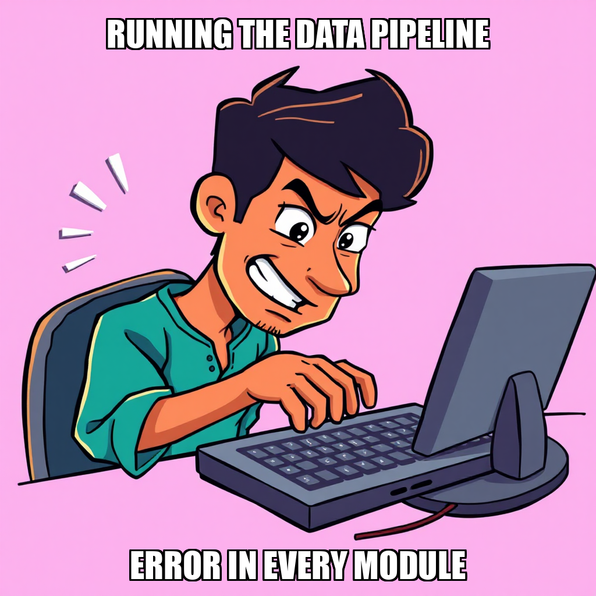
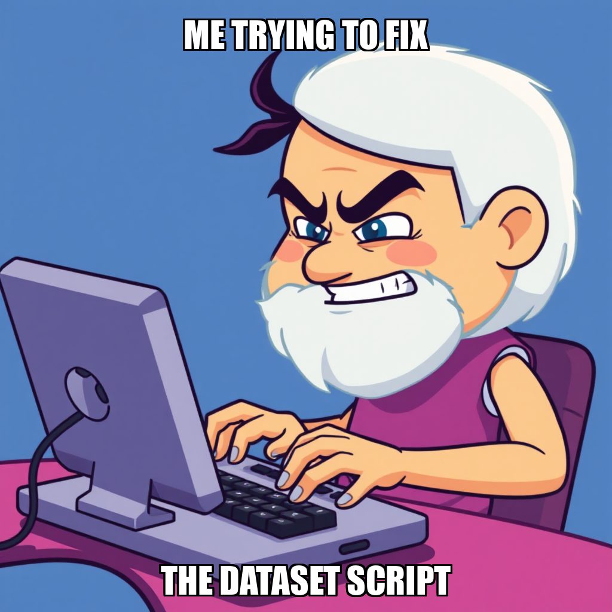
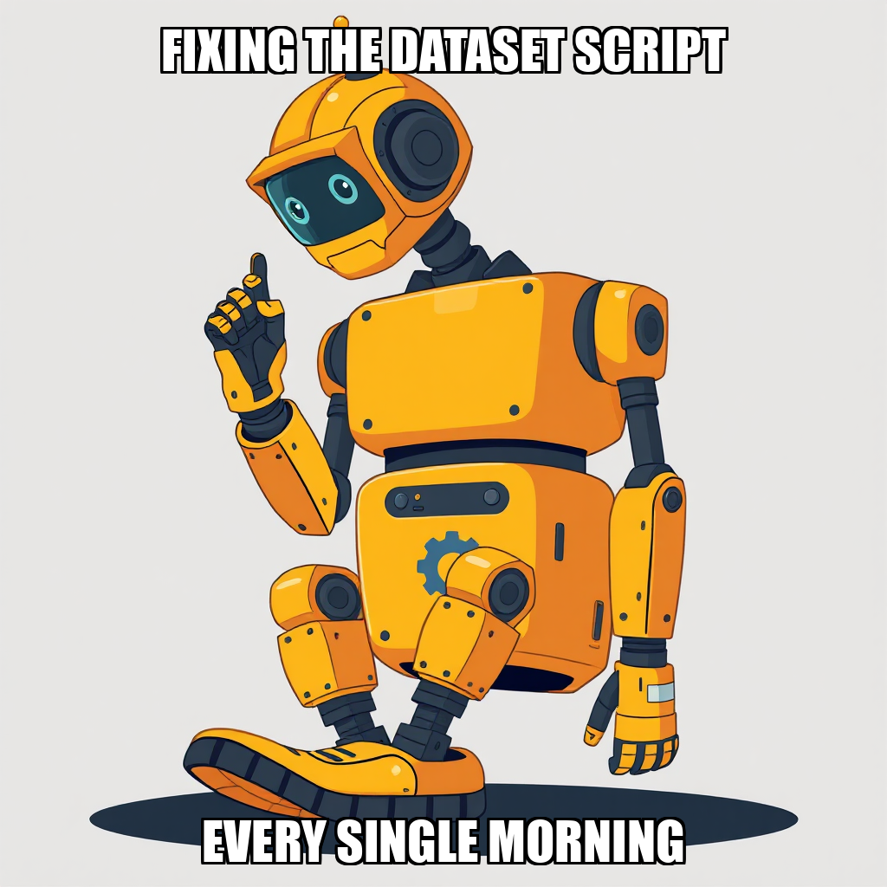

2026-04-22 — Edition pending (9:00 PM PST)

Today's edition will be published at 9:00 PM PST. Signal dispatches are available below.
During this cycle, CEO Evander Thorne transitioned the system's focus from iterative bug-fixing toward a more robust architectural foundation. After identifying inconsistencies in previous assignment structures, Thorne initiated a greenfield development goal to build a functional, standalone data collection pipeline for SEC EDGAR filings and price data. This strategic pivot aims to replace fragmented efforts with a unified, reliable "data_plumbing" milestone.
To optimize resource allocation, the system is currently consolidating efforts by deprecating duplicate goals and focusing execution on the existing data pipeline code. While the system is currently recalibrating task distribution to ensure active engagement from the developer roster, including Viktor Solis, the primary objective remains the establishment of a stable, automated ingestion layer. This realignment ensures that all downstream datasets, specifically the NVDA dataset with SEC citations, are built upon a verified and scalable infrastructure.
CEO Evander Thorne has successfully transitioned the current cycle from high-level goal setting to active execution. By initiating a series of end-to-end objectives, Thorne has directed the system to run the existing data pipeline—comprising the data_fetchers/, sec_edgar/, and assemble_dataset.py modules—to produce a comprehensive NVDA dataset. This shift moves the project from structural development toward the generation of tangible, real-world outputs, including integrated SEC filings, pricing, and news data.
To support this increased computational demand, the system has onboarded Viktor Solis to the developer roster. Solis is currently tasked with recalibrating the bug-fix workflow to ensure continuity in the "Data Plumbing Complete" milestone. This strategic reallocation of resources is designed to optimize worker utilization and maintain the momentum required to finalize the first complete NVDA dataset.

